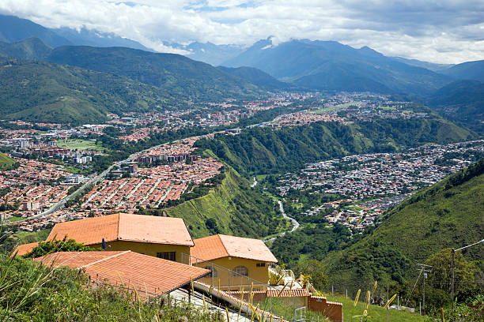

Julio Cesar Pulgar
About Me
Hello! I'm Julio Cesar Pulgar from Venezuela. I am passionate about web development and always eager to learn new technologies. Welcome to my WDD 131 portfolio page!
My Favorite Place
One of my favorite places is Mérida, Venezuela. The beautiful mountains and vibrant culture make it a wonderful place to visit and live.